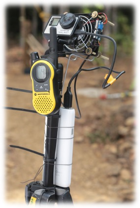

Motivation
Motion is a bio-marker representing the mechanics, sensing, and interaction of the organism in its environment
A lot can be known about the physical condition and behavioral state of an organism by quantifying how it moves.
For example, changes in the organism's morphology, behavior, and/or its environment can directly impact movement - a person
walking with the assist of a crutch compared to a person walking without it will result in different motion
signals; running versus walking
will lead to different movement patterns; walking on sand versus walking on hard floor will also result
in different characteristics of the movement pattern.
Animals are no different and changes in their morphology, behavior, and/or environment is reflected
in their motion.
I am interested in understanding how do intrinsic (morphology | behavior) and extrinsic (environment) factors manifest
in the biomechanics of the organism. In turn, we can infer the physical condition and behavior of the organism
by analyzing the movement patterns of the organism.
approach
Using consumer-grade equipment for high-resolution motion tracking
Modern cameras provide a cost-effective and versatile solution to capture motion and the behavioral context in which it is performed. The animation below shows a combination of two GoPro cameras recording the takeoff phase of flying lizards in the Agumbe rainforest. Behind the scenes Computer Vision wizadry allows markerless multi-point tracking of the body and converting the pixel coordinates to real-world position coordinates. Overall, by tracking features on the organism and in the environment, we can quantify body pose, kinematics, and the behavioral context of the organism while minimizing external perturbation.
However, working with consumer grade hardware is not straight forward and requires significant amouts of software and hardware tinkering. On the software side, one has to deal with temporal syncing of cameras, high lens distortion, and camera calibration tailored to the specific use case. The hardware side can lead to quite unexpected scenarios - for example - dealing with overheating issues with the GoPro cameras where custom cooling solution was required to keep the cameras running in the hot and humid forest environment. The image on the left shows the camera rig with a cooling fan powered by a power brick (constructed by Shankar CM). The power brick also allowed for extended recording durations with the GoPro camera - the entire setup could be left running for more than 8 hours without the camera overheating even at temperatures passing 35oC! Here's a science feature that I wrote for an Indian news outlet NDTV Gadgets talking about how everyday technology, improvisation, and the right group of people can lead to some very cool science!